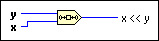

Logical Shift Function
Owning Palette: Data Manipulation Functions
Requires: Base Development System
Shifts x the number of bits specified by y.
The connector pane displays the default data types for this polymorphic function.

 Add to the block diagram Add to the block diagram |
 Find on the palette Find on the palette |